| ggplot2 |
|---|
| 3.5.1 |
25 Fitting a bivariate model
Bivariate data consist of datasets where two variables are measured for each observation. For instance, both wind speed and temperature might be recorded at specific locations. This contrasts with univariate data, where only a single variable—such as temperature—is measured for each observation at two different locations.
Understanding how to model and analyze bivariate data is critical for uncovering relationships and trends between the variables. In this chapter, we will delve into common fitting strategies that are specifically tailored for bivariate datasets.
25.1 Scatter plot
A scatter plot is a widely used visualization tool for comparing values between two variables. In some cases, one variable is considered dependent on the other, which is then referred to as the independent variable. The dependent variable, also known as the response variable, is typically plotted on the y-axis, while the independent variable, also called the factor (not to be confused with the factor data type in R, used as a grouping variable), is plotted on the x-axis.
In other situations, the focus may not be on a dependent-independent relationship. Instead, the goal might simply be to explore and understand the overall relationship between the two variables, without assigning a hierarchical dependency.
The following figure shows a scatter plot of a vehicle’s miles-per-gallon (mpg) consumption as a function of horsepower (hp). In this exercise, we’ll seek to understand how a car’s miles-per-gallon (the dependent variable) can be related to its horsepower (the independent variable).
int hp^1
30.09886054 -0.06822828 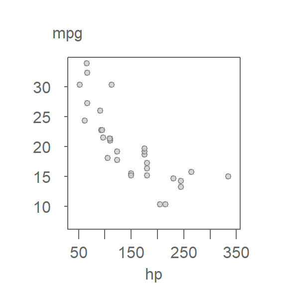
25.2 Fitting a model to the data
In univariate data analysis, we aim to reduce the data to manageable parameters, providing a clearer “handle” on the dataset. Similarly, when working with bivariate data, we can start by fitting the simplest possible model. For the variable mpg, a straightforward approach is to use a measure of location, such as the mean.
int
20.09062 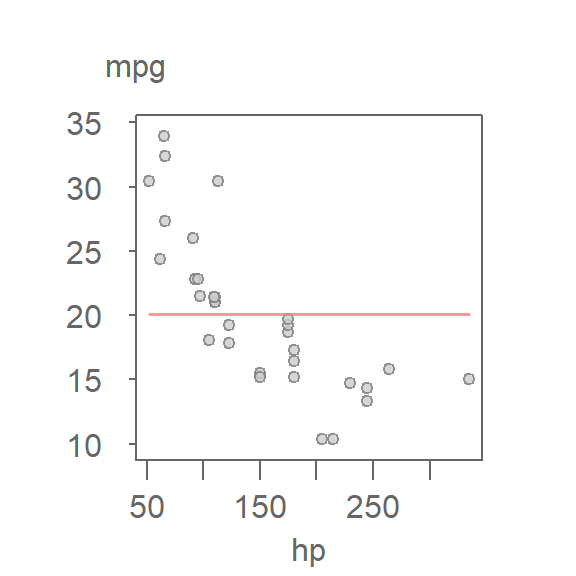
The red line represents the fitted model. Mathematically, this model can be expressed as:
\[
mpg = a + b(hp)^0 = a + b(1) + \epsilon = 20.09 + \epsilon
\] The equation is a 0th order polynomial model, The polynomial order is determined by the highest power to which the independent variable is raised (0 in this case). For now, note that regardless of hp’s observed value, its contribution to mpg remains constant. The terms \(a\) and \(b\) are defined as the model’s intercept and slope. We will delve into the meanings of \(a\) and \(b\) later in this section. \(\epsilon\) is the residual or the difference between each observation and the fitted model.
If this were a univariate dataset, modeling the data using the mean would be a reasonable choice. But, given that this is a bivariate dataset, this approach fails to utilize the variation in hp to explain mpg.
The pattern observed in the scatter plot suggests that as hp increases, mpg decreases. We can model this by fitting the line in such a way so as to capture the pattern generated by the points. The fitting strategy can be as simple as “eyeballing” the fit, or adopting more involved statistical methods like the least-squares method.
The following plot is an example of a line fitted to the data using the least-square method.
int hp^1
30.09886054 -0.06822828 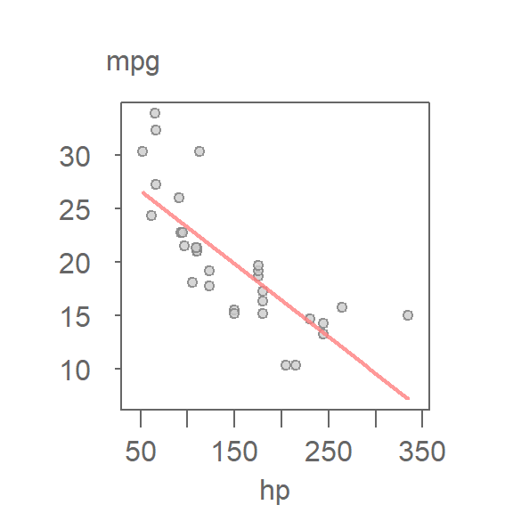
The modeled line can be expressed mathematically as:
\[ mpg = a + b(hp)^1 + \epsilon = 30.1 - 0.068(hp) + \epsilon \]
This is a 1st order polynomial where hp is raised to the power of 1. Here, the intercept \(a\) is the value mpg would take if hp were zero. The term \(b\) is the slope of the line and is interpreted as the change in \(y\) for every unit change in \(x\). In our example, for every one horsepower increase, the miles-per-gallon decreases by 0.068 miles-per-gallon.
Not all relationships will necessarily follow a perfectly straight line. Relationships can be curvilinear. Polynomial functions can take on many different non-linear shapes. The power to which the \(x\) variable is raised to will define the nature of that shape. For example, to fit a quadratic line to the data, one can define the following model:
\[ mpg = a + b(hp) + c(hp)^2 + \epsilon \]
The model retains the slope term, \(b\), and adds the curvature coefficient, \(c\).
Fitting the model to the data using least squares method results in the following coefficients:
\[ mpg = 40.4 -0.2(hp) + 0.0004(hp)^2 + \epsilon \]
The modeled line looks like:
int hp^1 hp^2
40.4091172029 -0.2133082599 0.0004208156 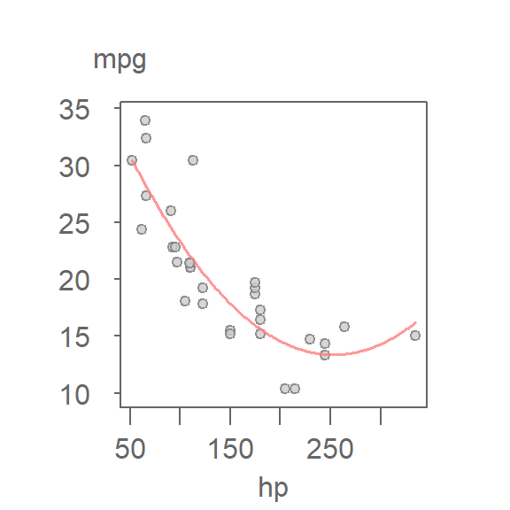
25.3 Generating bivariate plots with base R
In R, a scatter plot can be easily created using the base plotting environment. Below, is an example of this process with the built-in mtcars dataset.
plot(mpg ~ hp, mtcars)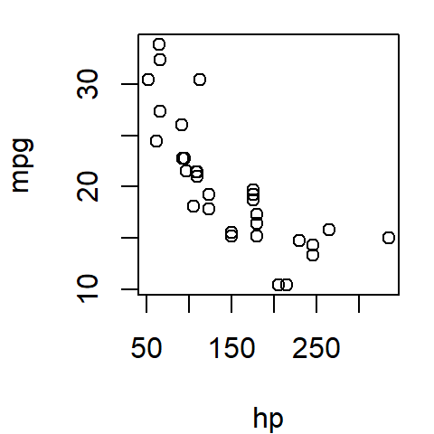
The formula mpg ~ hp can be interpreted as …mpg as a function of hp…, where mpg (miles per gallon) is plotted on the y-axis and hp (horsepower) on the x-axis.
To overlay a regression line on the scatter plot, you first need to define a linear model using the lm() function.
M1 <- lm(mpg ~ hp, mtcars)Here, a first-order polynomial (linear) model is fitted to the data. The mpg ~ hp carries the same interpretation as in the plot() function. The model coefficients (intercept and slope) can be extracted as a numeric vector from the model M1 using the coef() function.
coef(M1)(Intercept) hp
30.09886054 -0.06822828 Once the model is defined, you can add the regression line to the plot by passing the M1 model to abline() as an argument.
plot(mpg ~ hp, mtcars)
abline(M1, col = "red")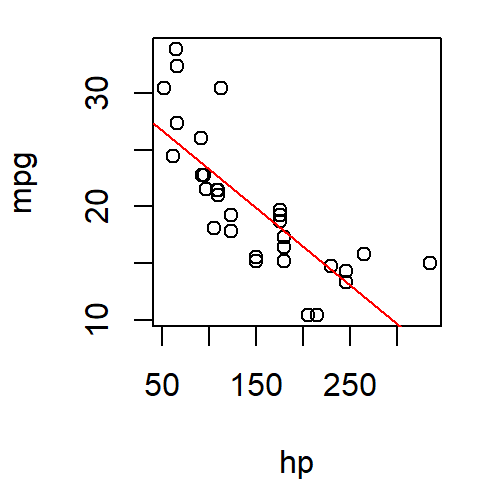
In this example, the regression line is displayed in red.
To fit a second-order polynomial (quadratic) model, extend the formula by adding a second-order term using the I() function:
M2 <- lm(mpg ~ hp + I(hp^2), mtcars)When raising an independent variable \(x\) to a power using the caret (^) operator, you must wrap the term with I(). Without it, lm() may misinterpret the formula, leading to unintended behavior.
Adding the quadratic regression line (or any higher-order polynomial model) to the plot requires generating predicted values using the predict() function. These predictions are then plotted using the lines() function:
plot(mpg ~ hp, mtcars)
# Create sequence of hp values to
x.pred <- data.frame( hp = seq(min(mtcars$hp), max(mtcars$hp), length.out = 50))
# Predict mpg values based on the quadratic model
y.pred <- predict(M2, x.pred)
# Add the quadratic regression line to the plot
lines(x.pred$hp, y.pred, col = "red")In this code, we:
- Create a sequence of
hpvalues covering the range of the dataset. - Predict the corresponding
mpgvalues using the quadratic modelM2. - Add the predicted curve to the plot with
lines().
25.4 Generating bivariate plots with ggplot
Using the ggplot2 package in R, a scatter plot can be created with minimal effort. Here’s an example using the built-in mtcars dataset:
library(ggplot2)
ggplot(mtcars, aes(x = hp, y = mpg)) + geom_point()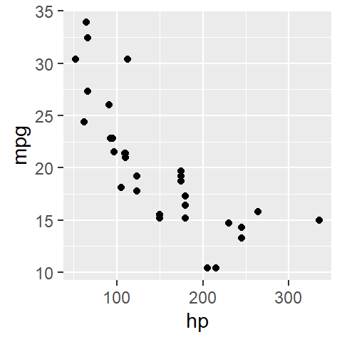
In this code, ggplot() initializes the plot and specifies the dataset (mtcars) and aesthetics (aes()), where x = hp and y = mpg. geom_point() adds points to create the scatter plot.
o add a linear regression line to the scatter plot, use the stat_smooth() function:
ggplot(mtcars, aes(x = hp, y = mpg)) + geom_point() +
stat_smooth(method ="lm", se = FALSE)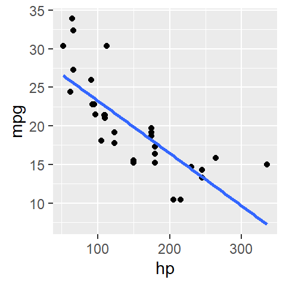
Here, the method = "lm" argument specifies that a linear model (lm) is used for the regression line. The se = FALSE argument prevents the addition of a confidence interval around the regression line. (Confidence intervals are not covered in this course). Note that there’s no need to create a separate model outside the ggplot pipeline, as the stat_smooth() function handles it automatically.
The stat_smooth() function can also fit higher-order polynomial models by specifying the desired formula. For instance, to fit a quadratic model:
ggplot(mtcars, aes(x = hp, y = mpg)) + geom_point() +
stat_smooth(method ="lm", se = FALSE, formula = y ~ x + I(x^2) )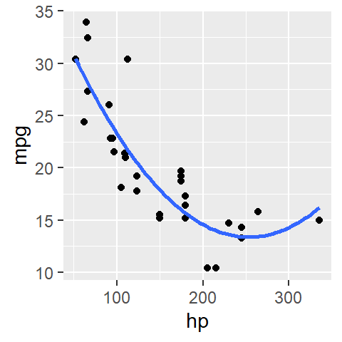
In this case, the formula argument defines the model as \(y=x+x^2\), where \(x\) and \(y\) refer to the x- and y-axes, respectively. The I() function ensures that the quadratic term (x^2) is treated correctly in the formula.
It’s worth noting that the formula directly references x and y instead of specific column names. This generality allows the formula to adapt to the axis mappings defined in the aes() function.
25.5 None-parametric fit
Polynomial models used to fit lines to data are classified as parametric models. These models require defining a specific functional form (e.g., linear, quadratic) a priori, which is then fitted to the data. By imposing this predefined structure, parametric models make strong assumptions about the underlying relationship between variables.
In contrast, non-parametric models belong to a class of fitting strategies that do not assume a specific structure for the data. Instead, these models are designed to adapt flexibly, allowing the data to reveal its inherent patterns and relationships. One such method used in this course is the loess fit, a locally weighted regression approach.
25.5.0.1 Loess
A flexible curve-fitting method is the loess curve (short for local regression, also known as local weighted regression). This technique fits small segments of a regression line across the range of x-values and links the midpoints of these segments to generate a smooth curve. The range of x-values contributing to each localized regression lines is controlled by the span parameter, \(\alpha\), which typically ranges from 0.2 to 1 (though it can exceed 1 for smaller datasets). A larger \(\alpha\) value results in a smoother curve. Another key parameter, \(\lambda\), specifies the polynomial order of the localized regression lines. This is usually set to 1, although in ggplot2, the loess function defaults to a 2nd order polynomial.
25.5.0.2 How a loess is constructed
Behind the scenes, each point (\(x_i\), \(y_i\)) that defines the loess curve is constructed as follows:
A subset of data points closest to point \(x_i\) are identified (\(x_{130}\) is used as an example in the figure below). The number of points in the subset is identified by multiplying the bandwidth \(\alpha\) by the total number of observations. In our current example, \(\alpha\) is set to 0.5. The number of points defining the subset is thus 0.5 * 32 = 16. The region encompassing these points is displayed in a light blue color.
The points in the subset are assigned weights. Greater weight is assigned to points closest to \(x_i\). The weights define the points’ influence on the fitted line. Different weighting techniques can be implemented in a loess with the
gaussianweight being the most common. Another weighting strategy we will also explore later in this course is thesymmetricweight.A regression line is fit to the subset of points. Points with smaller weights will have less leverage on the fitted line than points with larger weights. The fitted line can be either a first order polynomial fit or a second order polynomial fit.
Next, the value \(y_i\) from the regression line is computed (red point in panel (d)). This is one of the points that will define the shape of the loess.
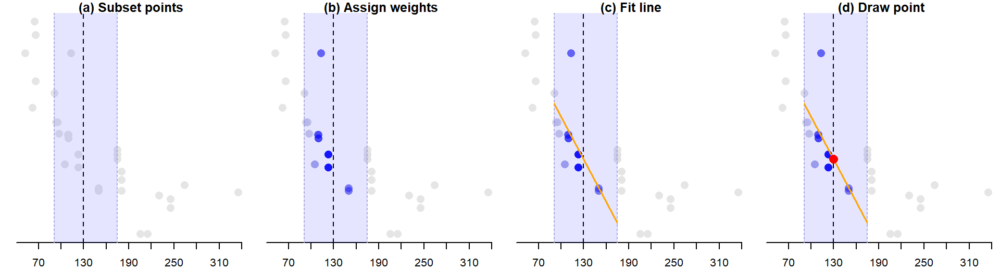
The above steps are repeated for as many \(x_i\) values practically possible. Note that when \(x_i\) approaches an upper or lower limit, the subset of points is no longer centered on \(x_i\). For example, when estimating \(x_{52}\), the sixteen closest points to the right of \(x_{52}\) are selected. Likewise, for the upper bound \(x_{335}\), the sixteen closest points to the left of \(x_{335}\) are selected.
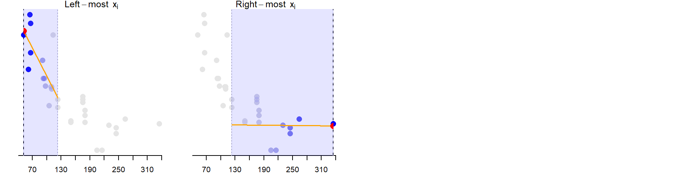
In the following example, just under 30 loess points are computed at equal intervals. This defines the shape of the loess.
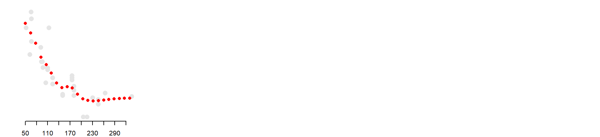
It’s more conventional to plot the line segments than it is to plot the points.
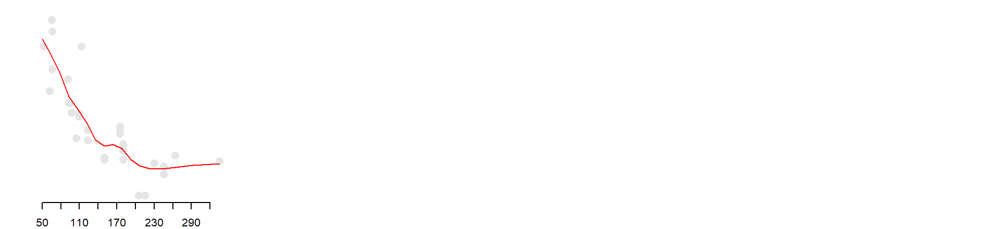
25.6 Generating a loess model in base R
The loess fit can be computed in R using the loess() function. It takes as arguments span (\(\alpha\)), and degree (\(\lambda\)).
# Fit loess function
lo <- loess(mpg ~ hp, mtcars, span = 0.5, degree = 1)
# Predict loess values for a range of x-values
lo.x <- seq(min(mtcars$hp), max(mtcars$hp), length.out = 50)
lo.y <- predict(lo, lo.x)The modeled loess curve can be added to the scatter plot using the lines function.
plot(mpg ~ hp, mtcars)
lines(lo.x, lo.y, col = "red")25.7 Generating a loess model in ggplot
In ggplot2 simply pass the method="loess" parameter to the stat_smooth function.
ggplot(mtcars, aes(x = hp, y = mpg)) + geom_point() +
stat_smooth(method = "loess", se = FALSE, span = 0.5)ggplot defaults to a second degree loess (i.e. the small regression line elements that define the loess are modeled using a 2nd order polynomial and not a 1st order polynomial). If a first order polynomial is desired, you need to include an argument list in the form of method.args=list(degree=1) to the stat_smooth function.
ggplot(mtcars, aes(x = hp, y = mpg)) + geom_point() +
stat_smooth(method = "loess", se = FALSE, span = 0.5,
method.args = list(degree = 1) )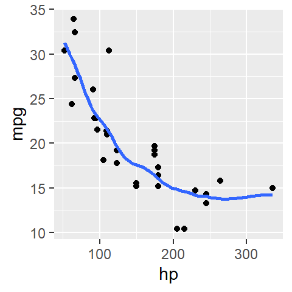